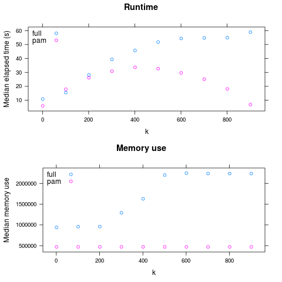

This is a realistic example of using nestly to examine the performance of two algorithms. Source code to run it is available in examples/adcl/.
We will use the min_adcl_tree subcommand of the rppr tool from the pplacer suite, available from http://matsen.fhcrc.org/pplacer.
This tool chooses k representative leaves from a phylogenetic tree. There are two implementations: the Full algorithm solves the problem exactly, while the PAM algorithm uses a variation on the partitioning among medoids heuristic to find a solution.
We’d like to compare the two algorithms on a variety of trees, using different values for k.
Setting up the comparison is demonstrated in 00make_nest.py, which builds up combinations of (algorithm, tree, k):
1 2 3 4 5 6 7 8 9 10 11 12 13 14 15 16 17 18 19 20 21 22 23 24 25 26 27 28 29 30 31 32 33 34 35 36 37 38 39 40 41 42 43 44 45 46 47 | #!/usr/bin/env python
# This example compares runtimes of two implementations of
# an algorithm to minimize the average distance to the closest leaf
# (Matsen et. al., accepted to Systematic Biology).
#
# To run it, you'll need the `rppr` binary on your path, distributed as part of
# the pplacer suite. Source code, or binaries for OS X and 64-bit Linux are
# available from http://matsen.fhcrc.org/pplacer/.
#
# The `rppr min_adcl_tree` subcommand takes a tree, an algorithm name, and
# the number of leaves to keep.
#
# We wish to explore the runtime, over each tree, for various leaf counts.
import glob
from os.path import abspath
from nestly import Nest, stripext
# The `trees` directory contains 5 trees, each with 1000 leaves.
# We want to run each algorithm on all of them.
trees = [abspath(f) for f in glob.glob('trees/*.tre')]
n = Nest()
# We'll try both algorithms
n.add('algorithm', ['full', 'pam'])
# For every tree
n.add('tree', trees, label_func=stripext)
# Store the number of leaves - always 1000 here
n.add('n_leaves', [1000], create_dir=False)
# Now we vary the number of leaves to keep (k)
# Sample between 1 and the total number of leaves.
def k(c):
n_leaves = c['n_leaves']
return range(1, n_leaves, n_leaves // 10)
# Add `k` to the nest.
# This will call k with each combination of (algorithm, tree, n_leaves).
# Each value returned will be used as a possible value for `k`
n.add('k', k)
# Build the nest:
n.build('runs')
|
Running that:
$ ./00make_nest.py
Creates a new directory, runs.
Within this directory are subdirectories for each algorithm:
runs/full
runs/pam
Each of these contains a directory for each tree used:
$ ls runs/pam
random001 random002 random003 random004 random005
Within each of these subdirectories are directories for each choice of k.
$ ls runs/pam/random001
1 101 201 301 401 501 601 701 801 901
These directories are leaves. There is a JSON file in each, containing the choices made. For example, runs/full/random003/401/control.json contains:
{
"algorithm": "full",
"tree": "/home/cmccoy/development/nestly/examples/adcl/trees/random003.tre",
"n_leaves": 1000,
"k": 401
}
The nestrun command-line tool allows you to run a command for each combination of parameters in a nest. It allows you to substitute parameters chosen by surrounding them in curly brackets, e.g. {algorithm}.
To see how long, and how much memory each run uses, we’ll use the short shell script time_rppr.sh:
1 2 3 4 5 6 | #!/bin/sh
export TIME='elapsed,maxmem,exitstatus\n%e,%M,%x'
/usr/bin/time -o time.csv \
rppr min_adcl_tree --algorithm {algorithm} --leaves {k} {tree}
|
Note the placeholders for the parameters to be provided at runtime: k, tree, and algorithm.
Running a script like time_rppr.sh on every experiment within a nest in parallel is facilitated by the nestrun script distributed with nestly:
$ nestrun -j 4 --template-file time_rppr.sh -d runs
(this will take awhile)
This command runs the shell script time_rppr.sh for each parameter choice, substituting the appropriate parameters. The -j 4 flag indicates that 4 processors should be used.
Now we have a little CSV file in each leaf directory, containing the running time:
|----------+--------+-------------|
| elapsed | maxmem | exitstatus |
|----------+--------+-------------|
| 17.78 | 471648 | 0 |
|----------+--------+-------------|
To analyze these en-masse, we need to combine them and add information about the parameters used to generate them. The nestagg script does just this.
$ nestagg delim -d runs -o results.csv time.csv -k algorithm,k,tree
Where -d runs indicates the directory containing program runs; -o results.csv specifies where to write the output; time.csv gives the name of the file in each leaf directory, and -k algorithm,k,tree lists the parameters to add to each row of the CSV files.
Looking at results.csv:
|----------+---------+------------+-----------+---------------------------------------+------|
| elapsed | maxmem | exitstatus | algorithm | tree | k |
|----------+---------+------------+-----------+---------------------------------------+------|
| 17.04 | 941328 | 0 | full | .../examples/adcl/trees/random001.tre | 1 |
| 20.86 | 944336 | 0 | full | .../examples/adcl/trees/random001.tre | 101 |
| 31.75 | 944320 | 0 | full | .../examples/adcl/trees/random001.tre | 201 |
| 39.34 | 980048 | 0 | full | .../examples/adcl/trees/random001.tre | 301 |
| 37.84 | 1118960 | 0 | full | .../examples/adcl/trees/random001.tre | 401 |
| 42.15 | 1382000 | 0 | full | .../examples/adcl/trees/random001.tre | 501 |
etc
Now we have something we can look at!
So: PAM is faster for large k, and always has lower maximum memory use.
(generated by examples/adcl/03analyze.R)